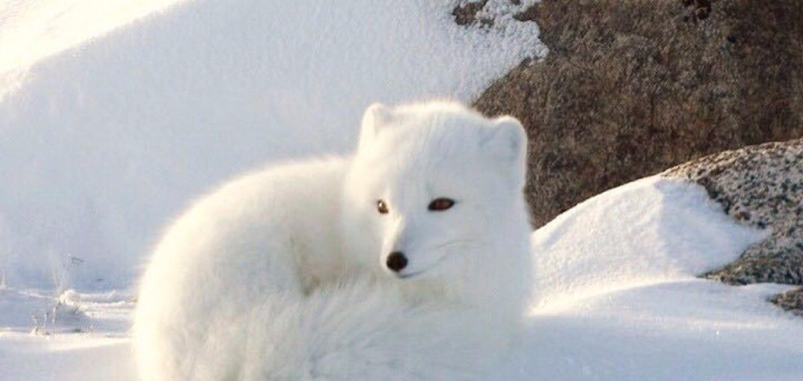
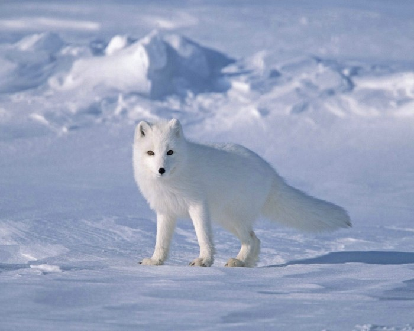
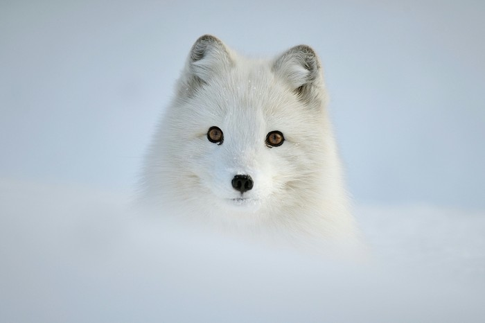
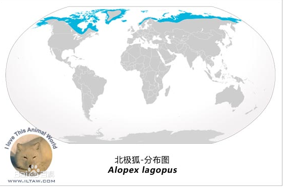

北极狐体长50-55厘米，尾长28-31厘米，肩高在25-30厘米，体重3-3.8公斤。雄性略大。 北极狐额面狭，吻部很尖，耳短而圆，颊后部生长毛，脚底部也密生长毛，所以适于在冰雪地上行走，尾毛蓬松，尖端白色，身体略小于赤狐。北极狐毛皮既长又软且厚，所以北极狐可忍受严寒。冬天毛色为纯雪白色，仅无毛的鼻尖和尾端黑色，自春天至夏天逐渐转变为青灰色，特称“青狐”
北极狐的发情期。当发情开始时，雌北极狐头向上扬起，坐着鸣叫，这是在呼唤雄北极狐。雄性在发情时，也是鸣叫，比雌性叫得更频繁、更性急些，最后用独特的声调结尾，有些类似猫打架的叫声，也有些像松鸡的声音,一般只要51～52天，一窝小狐狸便诞生了，每窝一般8～10个，最高纪录是16个，刚出生的幼狐尚未睁开眼睛，16～18天，小狐便开始睁眼看世界了。经两个月的哺乳期后，母狐便开始从野外捕来旅鼠、田鼠等喂养小狐狸，每当母狐叼着猎物回来，小狐狸们便争先恐后地冲出洞穴分享猎物。约10个月的时间，小狐狸们便开始达到性成熟，随后开始成家立业，过着一种新的生活。
北极狐分布于北冰洋的沿岸地带及一些岛屿上的苔原地带，能在零下50℃的冰原上生活。北极狐喜欢在丘陵地带筑巢，而北极狐的巢有几个出入口。当遇到暴风雪时，北极狐可以呆在窝里一连几天不出来。北极狐年年都为它的巢穴进行一些维修和扩展，以便能长期居住。夏天，当食物丰富时，北极狐会把部分食物储存在它的巢穴中。冬天，当巢穴中所储存的食物被消耗殆尽时，白狐会跟踪北极熊，拣食北极熊所吃剩的残羹剩饭。所以冬天里北极熊身后总会有2到3只白狐在悄悄地跟踪。但当北极熊非常饥饿时，它也会攻击北极狐。北极狐的食物包括旅鼠、鱼、鸟类与鸟蛋、浆果和北极兔，有时也会漫游海岸捕捉贝类，但北极狐主食还是旅鼠。当北极狐闻到在旅鼠窝的气味或听到旅鼠窝里旅鼠的尖叫声时，它会迅速地挖掘位于雪下面的旅鼠窝，当扒得差不多时，北极狐会高高跳起，借着跃起的力量，用腿将旅鼠窝压塌，然后将窝里的旅鼠一网打尽。在极度饥饿的情况下，北极狐会自相攻击
北极狐活动于整个北极范围，其中包括：俄罗斯，加拿大，阿拉斯加，格陵兰和斯瓦尔巴群岛的外缘，以及亚北极和高山地区，如冰岛，斯堪的纳维亚大陆及北西伯利亚地区。
